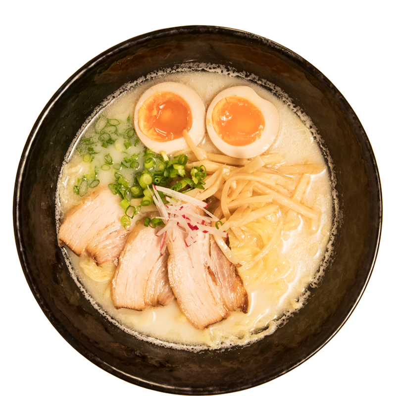

Malzemeler
- 400 gram tavuk
- 2 yemek kaşığı soya sosu
- 1 paket ramen (noodle da kullanabilirsiniz.)
- 2 diş sarımsak
- 2 adet yumurta
- 1 tatlı kaşığı zencefil (rendelenmiş)
- 4-5 dal taze soğan
- 1 yemek kaşığı susam yağı
- Yarım çay kaşığı kabartma tozu
- Tuz
Yapılışı
- İlk olarak bir tencerenin içerisine
2 bardak su
ve tavukları ekleyin.
- Üzerine rendelenmiş zencefil, sarımsak,
tuz ve yeşil soğanı da
ekleyerek yaklaşık 30 dakika haşlayın.
- Ardından suyun içinden haşlanan
tavukları alın ve didikleyin.
- Suyu süzgeçten geçirerek
başka bir tencereye aktarın.
- Suyun içerisine susam yağı ve soya yağını ilave edin.
Bu suyu 15 dakika boyunca kaynatın.
- Farklı bir tencereye 2 bardak
su ekleyin ve kaynatın.
Su kaynamaya başladığında içerisine
ramenleri ve kabartma tozunu ekleyin.
- Ramen yumuşayıncaya kadar pişirin.
Ramenleri süzdükten sonra
bir kabın içerisine alın.
- Susam yağıyla birlikte kaynayan sudan bir
kepçe alın ve ramenin üzerine dökün.
- Ramenlerin üzerine haşlanmış yumurta,
haşlanmış tavuk parçaları,soya filizi
ve taze soğan ekleyerek servis edin.
Afiyet olsun.